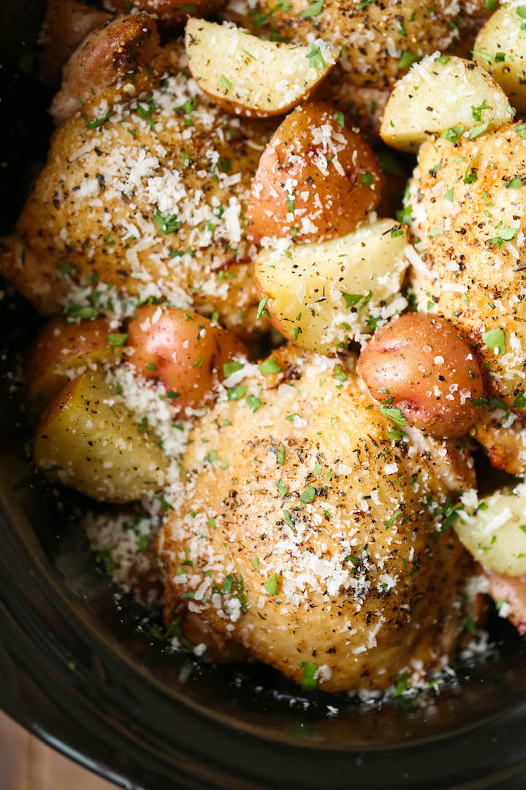

Slow Cooker Garlic Parmesan Chicken and Potatoesc

Tender chicken and delicious baby red potatoes, a full meal in one pot!
Do you like chicken? Do you like potatoes? How about garlic and Parmesan? Well,
then this recipe is right up your alley. This recipe calls for chicken thighs,
and even if you usually prefer white meat, I bet this recipe might change your mind.
Fresh Parmesan cheese will definitely go a long way in this recipe. (Plus, fresh
Parmesan doesn't contain wood pulp. Seriously, google it!) Also, if you can't find
baby red potatoes or just happen to have larger ones on hand, you can just cut them into quarters
or eighths. Whichever you prefer. And finally, you're going to need a slow cooker of course.
Throw this together in the morning and by dinner time, you'll have a full meal that'll make you
love dark meat.
Ingredients (yeilds 4 servings)
- 8 bone-in, skin-on chicken thighs
- 1/2 teaspoon dried basil
- 1/2 teaspoon dried oregano
- 1/4 teaspoon dried rosemary
- Kosher salt and freshly ground black pepper, to taste
- 2 tablespoons unsalted butter
- 2 pounds baby red potatoes, quartered
- 2 tablespoons olive oil
- 4 cloves garlic, minced
- 1/2 teaspoon dried thyme
- 1 cup freshly grated Parmesan
- 2 tablespoons chopped fresh parsley leaves
Directions
- Season chicken with basil, oregano, rosemary, salt and pepper, to taste.
- Melt butter in a large skillet over mediu, high heat.
Add chicken, skin-side down, and sear both sides until golden brown, about 2-3 minutes per side;
drain excess fat and set chicken aside.
- Place potatoes into a 6 quart slow cooker.
Stir in olive oil, garlic, and thyme; season with salt and pepper, to taste.
Add chicken to the slow cooker in an even layer.
- Cover and cook on low heat for 7-8 hours, or high for 3-4 hours,
or until the chicken is completely cooked through, reaching an internal temperature
of 165 degrees F.
- Serve immediately, sprinkled with Parmesan and garnished with parsley, if desired.